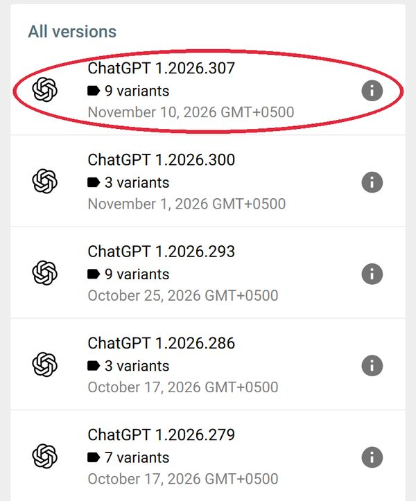
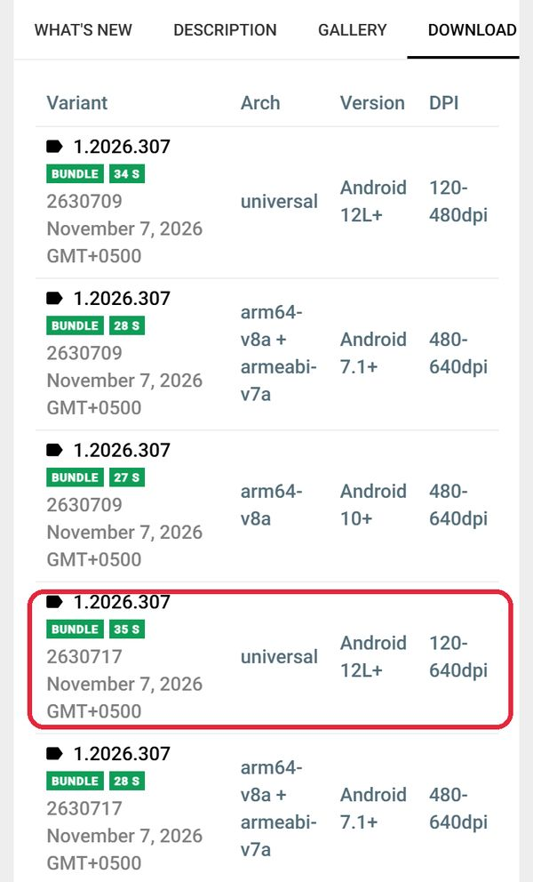
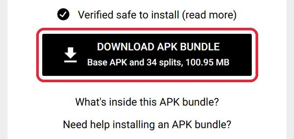
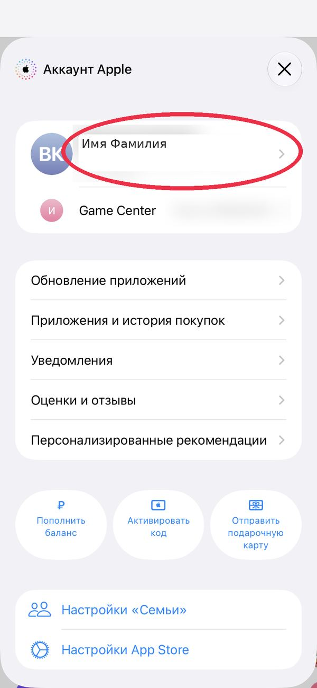
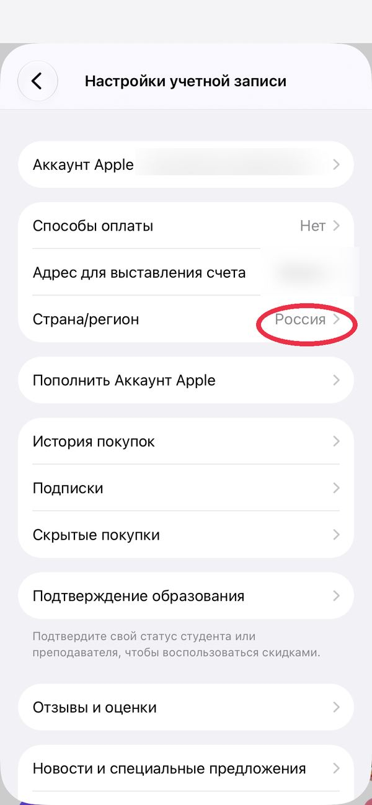
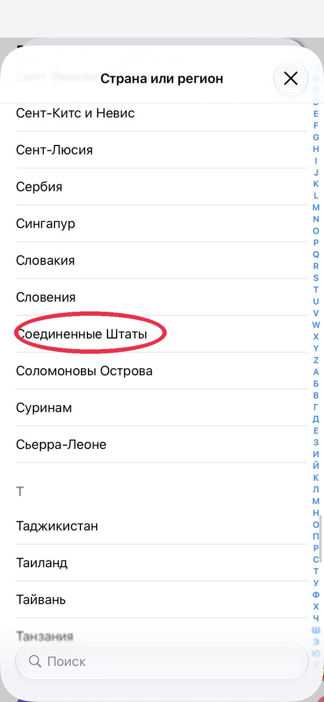
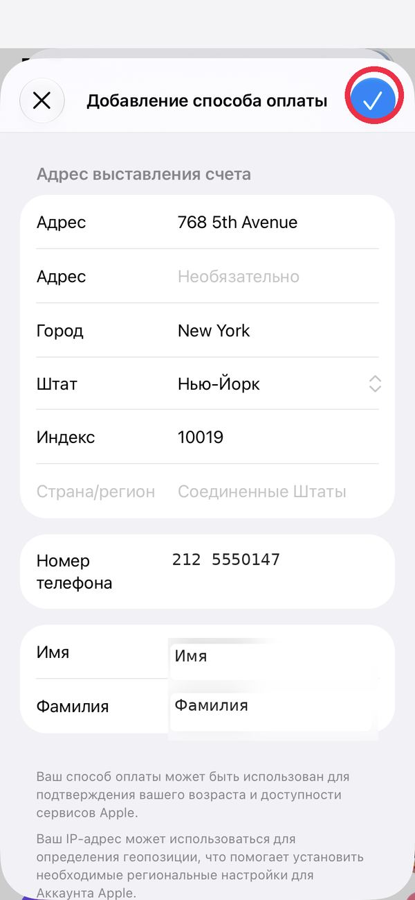
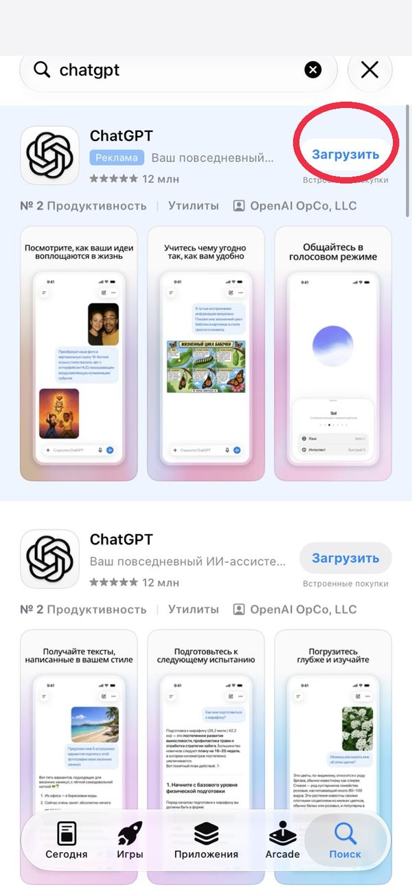

ChatGPT на Android
Устанавливаем ChatGPT через APKMirror.
Сначала установщик, затем сам ChatGPT.
Внутри две ссылки прямо на нужных шагах.
Никакой отдельной свалки ссылок в конце.
Всё, погнали, блядь!
ШАГ 1. Ставим APKMirror Installer
Открой ссылку:
СКАЧАТЬ УСТАНОВЩИКНажми «Установить».
Дождись завершения.
Это программа для установки файлов .apkm.
ШАГ 2. Скачиваем ChatGPT
Открой страницу:
СКАЧАТЬ CHATGPTЕсли открылось описание — пролистай вниз до блока «All versions».
Нажми на самую верхнюю версию в этом списке.

Откроется страница версии. Сверху реклама — листай вниз.
Или сразу нажми вкладку DOWNLOAD.
Найдёшь таблицу «Download ChatGPT».
Смотри колонку Arch и выбирай строку под свой Android:
• Android 13 и новее — universal
• Android 10–12 — arm64-v8a
• Android 7–9 — arm64-v8a + armeabi-v7a
Не знаешь свой Android? Настройки → О телефоне → Версия Android.
Если подходящих строк несколько — бери любую.
В нужной строке нажми на номер версии слева.

Откроется ещё одна страница. Листай вниз до чёрной кнопки.
Нажми Download APK Bundle и скачай .apkm.

Если сайт попросит подтвердить, что ты человек, — поставь галочку.
Проверяй разработчика: OpenAI.
ШАГ 3. Находим скачанный файл
Быстрый путь: когда файл скачается, нажми на него прямо в браузере или в уведомлении.
Телефон предложит открыть его через APKMirror Installer — соглашайся.
Дальше сразу переходи к шагу 4.
Не вышло? Тогда так:
Открой APKMirror Installer.
Выбери «Browse files» или «Обзор файлов».
Если телефон спросит доступ к файлам или хранилищу — разреши.
Открой папку «Загрузки» (Download).
Найди файл ChatGPT с расширением .apkm.
Нажми на этот файл.
ШАГ 4. Устанавливаем приложение
Нажми «Install» / «Установить».
Если Android запросит разрешение, разреши установку из APKMirror Installer.
Нажми «Настройки» в этом окне.
Откроется экран «Установка неизвестных приложений».
Включи переключатель «Разрешить из этого источника».
На Samsung, Xiaomi и других название может немного отличаться — ищи похожее.
Вернись назад и подтверди установку.
Дождись завершения.
Значок ChatGPT появится среди приложений.
Окно с разрешением не появилось, а установка не идёт? Открой Настройки → Приложения → APKMirror Installer → «Установка неизвестных приложений» и включи переключатель там.
ШАГ 5. Запускаем ChatGPT
Открой ChatGPT.
Войди или зарегистрируйся любым удобным способом.
Для входа используй VPN.
Пока осваиваем бесплатную версию.
Оплату Plus разберём в отдельном гайде.
ГОТОВО!
Telegram: @sanchebas_aiApp Store → США → ChatGPT
Пополнение баланса и Plus разберём в отдельном гайде.
ПЕРЕД НАЧАЛОМ
Потрать баланс Аккаунта Apple до нуля.
Отмени все подписки в App Store.
Иначе Apple не даст сменить страну.
ШАГ 1. Открываем App Store
Открой App Store.
Нажми на значок профиля справа вверху.
ШАГ 2. Нажимаем на аккаунт
Нажми на карточку с именем и фамилией в середине экрана.
Откроются настройки учётной записи.

ШАГ 3. Настройки аккаунта
Открой настройки учётной записи.
Найди строку «Страна/регион» и нажми на неё.

ШАГ 4. Выбираем США
Найди и нажми «Соединённые Штаты».
Подтверди изменение страны.
Откроются условия — нажми «Принимаю».

ШАГ 5. Заполняем поля
Способ оплаты: «Нет».
Адрес: 768 5th Avenue
Город: New York
Штат: New York
Индекс: 10019
Телефон: (212) + 7 цифр
Впиши любые 7 цифр.
Адрес, город, штат и индекс указаны условно. Их никто не проверяет. Можете вписать данные, которые я вам дал.
ШАГ 6. Подтверждаем
Нажми синюю галочку (ОК) вверху экрана.
Проверь в настройках, что страна теперь США.

ШАГ 7. Скачиваем ChatGPT
Зайди в App Store.
Найди ChatGPT.
Разработчик: OpenAI OpCo, LLC.
Нажми «Загрузить».

ШАГ 8. Запускаем ChatGPT
Открой ChatGPT и зарегистрируйся любым удобным способом.
Для входа понадобится VPN.
Пока осваиваем бесплатную версию.
Гайд по оплате Plus добавим позже.
Можно вернуть российский регион App Store обратно.